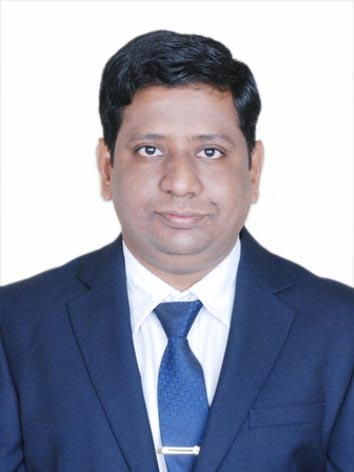

Mr. Sandip Suresh Hire

Career Objective:
I am a hardworking and dedicated individual seeking a rewarding career as a technical trainer in a reputed organization where I can apply my knowledge and skills to fulful Organizational goals to scale new heights for the organization and myself.
Academic Qualifications:
- PG Diploma in Big Data Analytics (PG-DBDA) with 65.50% - ACTS, CDAC, Pune (2019-2020)
- ME in Computer Science and Engineering with 65.50% - MGMCOE, SRTMU Nanded (2007-2013)
- BE in Computer Engineering with 61.28% - GF's GCOE, NMU Jalgaon (2001-2005)
- Diploma in Computer Engineering with 69.07% - Government Polytechnic Jalgaon, MSBTE (1998-2001)
- S.S.C. with 81.86% - S.G.S. Highschool Pachora, Nashik Board (1997-1998)
Technical Skills:
- Programming Skills: HTML 5, CSS, Javascript, PHP, Python 3.x, Core Java, C, Assembly Language, Linux Shell Script
- Database : MySQL, PostgreSQL, Oracle 11g, MongoDB, SQLite
- Model building : Machine Learning, Deep Learning, Big Data Technologies
- Big Data Ecosystem: Hadoop, Hdfs, Hive, Pig, Spark, Scala, Oozie, Sqoop, Kafka
- Cloud Technologies: AWS Cloud Services, Azure Cloud Services, Basics of Cloud Computing
- Supplementary Tools: Tableau, PowerBI
- Training undergone: MEAN Stack developer, Project Management Methodologies
Certifications:
- Oracle Certified Foundations Associate-Oracle Cloud Infrastructure Foundations-2021.
- AIGPE Lean Six Sigma White Belt Certification-September 2023.
- Google authorized and offered through Coursera “The Bits and Bytes of Computer Networking".
- Getting Started with Wireshark: The Ultimate Hands-On Course by Chris Greer
- CISCO Certificate courses on networking and Juniper Networking MOOC certificate course
- TCS iON "Career Edge Certificate" on Soft skills and Many MOOC certficates by Harappa education
- Free CCNA 200-301 course: Network Fundamentals by David Bombal and Neil Anderson.
Honors and Awards:
- "Certificate of Appreciation" by Vice-Chancellor of ADYPU, Pune for getting highest training feedback in year 2021-22.
- "Certificate of Appreciation" by BoS Pune University and Principal for delivering the seminar on "Emotional Intelligence".
- "Vishesh Pravinya Puraskar" for standing 77th in Nashik Board S.S.C. Examination in 1998.
Professional Experience:
-
KJ's Trinity Academy of Engineering, Kondhava, Pune
June 2023 - September 2023
Role - Assistant Professor
- Subjects taught- Machine Learning, Software Project Management, Humanities and Social Sciences
- Projects Guided- Stock Price Prediction using Time Series, Recommendation Systems for Health care
- Committes handled- Wall Magazine committee, Audit course incharge, Health Club
-
Shrimati Kashibai Navale College of Engineering, Vadgaon(BK), Pune
July 2022 - May 2023
Role - Assistant Professor
- Subjects taught- Machine Learning, Computer Networks and Security, Data Science and Big Data Analytics
- Projects Guided- Customer Churn Prediction, Global Energy usage and Forecast Analysis
- Committes handled- Wall Magazine committee, Audit course incharge, Health Club
-
Ajinkya D. Y. Patil University, Lohgaon, Pune
July 2021 - May 2022
Role - Senior IT Faculty
- Subjects taught- Python for Data Science, Principles of Virtualization, Data Center, Cloud Computing
- Responsibilities- Technical Trainer for Cloud Technology and Data Science using python
-
Afour Technologies Pvt. Ltd, Pune
Jan 2021 - April 2021
Role - Consultant
- Project handled- Resume Builder using Python-Flask Framework
- Responsibilities- Developed the code for backend and frontend and pushed it in gitlab etc.
-
Marathwada Institute of Technology, Aurangabad
August 2016 - November 2017
Role - Assistant Professor
- Subjects taught- Microprocessor Architecture, Fundamentals of Programming Languages
- Responsibilities- Subject coordinator, Internal Examiner, Lab incharge, Class Teacher, Virtual Lab coordinator
-
Pune Institute of Computer Technology, Pune
June 2013 - April 2016
Role - Assistant Professor
- Subjects taught- Microprocessor and Microcontroller Architecture, Computer organization, Compiler construction Lab
- Responsibilities- Subject coordinator, Internal Examiner, Lab incharge, Class Teacher
-
Marathwada Mitra Mandal's Institute of Technology, Lohgaon, Pune
July 2008 - Jan 2013
Role - Lecturer
- Subjects taught- Fundamentals of Data Structure, Data Structure, Fundamentals of Programming Languages
- Responsibilities- Campus incharge cum Chief Rector, Assistant Supervisor for University Examinations, Internal Examiner etc.
-
GF's Godavari College of Engineering, Jalgaon
Jan 2006 - June 2007
Role - Lecturer
- Subjects taught- Object Oriented Programming, System Programming, Fundamentals of Programming Languages
- Responsibilities- Timetable coordinator, Class Teacher, Lab incharge, Student's association coordinator etc.
-
S.S.G.B.'s College of Engineering and Technology, Bhusawal
July 2005 - Jan 2006
Role - Lecturer
- Subjects taught- Computer Graphics, Discrete Structure and Graph Theory, Web Technologies
- Responsibilities- Lab incharge, Internal Examiner etc.
Skills
- Customer service: ⭐️⭐️⭐️⭐️⭐️
- Microsoft Office Suite: ⭐️⭐️⭐️
- Organizational skills: ⭐️⭐️⭐️⭐️
Awards and Certifications
- Employee of the Month - ABC Inc. (August 2016)
Other